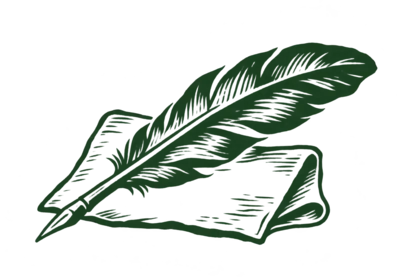
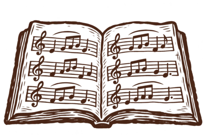
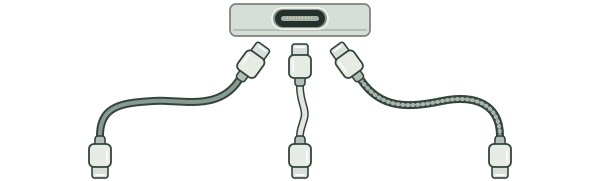

What’s bigger than Max?
Product names are supposed to help us tell tiers apart, yet increasingly they aren’t clear and leave us guessing. How well can you do? Start with six AI model pairs, or try putting three names in order.
Score
Your score
Rank three names from a lineup you haven’t seen yet.
Try another category
Where naming breaks down
AI labs have made naming ceilings hard to miss, alongside hardware and technical standards where modifiers collide or shared labels hide incompatible specs.
What comes after Opus?
In English, a haiku usually has three lines and a sonnet has fourteen, so length orders Haiku and Sonnet. That rule breaks down at Opus, which can be a work of any length; reading it as magnum opus shifts the scale to importance. By Fable, the metaphor has shifted again to the nature of the story itself—a short moral tale now sitting a tier above a defining work.
 Poetic form
Poetic formOften 3 lines in English. Traditionally 17 sound units (5–7–5) in Japanese.

Poetic formA poem of 14 lines.

Creative workA work of art. A magnum opus is its creator’s defining work.
 Story type
Story typeA story, usually short, that teaches a moral.
A mythos is a body of stories, which sounds broader than a single fable. Anthropic instead places them at the same capability level: Mythos 5.2 shares Fable 5.2’s capabilities, with access limited to verified organizations.
Each Claude model family also advances its version numbers independently. The jump from Opus 5 to 5.5 indicates progress within Opus, but says nothing about how it ranks against another family. Fable 5.2 launched after Opus 5.5 and sits a tier above it.
| Version | {% for family in page.claude_families %}{{ family }} | {% endfor %}{{ release.version }} | {% for family in page.claude_families %} {% assign released_on = release.dates[family] %}{% if released_on %} {% unless seen_families contains family %}{% assign seen_families = seen_families | push: family %}{% endunless %} {% elsif family == 'Haiku' and release.version == '5' %} Skipped {% endif %} | {% endfor %} {% endfor %}
|---|
Sources · Claude model overview · Public release history · Opus 5.5 release · Fable 5.2 release · Fable and Mythos · Haiku Foundation · My earlier essay on naming
Neon is heavier than carbon
Google ranks Carbon above Neon and Hydrogen in its Gemini 4 lineup. Consulting the periodic table points to Neon first: it is heavier, has a higher atomic number, and sits farther to the right, while row number ties Carbon and Neon. Borrowing scientific terms does more than leave the order opaque—knowing the underlying scale actively points to the wrong model.
Gemini on the periodic table
From Carbon (#1), you go right to Neon (#2), then all the way back to Hydrogen (#3).
Sources · Gemini 4 model tiers · IUPAC periodic table and atomic weights
Sol, Terra, Luna, and Astra
Sol, Terra, and Luna refer to the Sun, Earth, and Moon. Read by distance from Earth, Luna comes ahead of Terra; read by mass, the order matches OpenAI’s original lineup. Because the names do not specify which property matters, two intuitive readings produce different rankings.
- Model hierarchy
- {{ astra }} > {{ sol }} > {{ terra }} > {{ luna }}
- By mass
- {{ astra }} heavier stars > {{ sol }} > {{ astra }} lighter stars > {{ terra }} > {{ luna }}
- By distance from Earth
- {{ astra }} ≥ {{ sol }} > {{ luna }} > {{ terra }}
Putting the Sun at the top also left no obvious next tier. Naming the model above Sol after a specific star (such as Alpha Centauri) would require buyers to know astronomy and guess that the scale had shifted from mass to distance. OpenAI instead chose Astra (“stars”)—a category that includes the Sun itself, along with stars both heavier and lighter than it. Today, the analogy only makes sense if you recognize the terms—and don’t think too hard about them.
OpenAI has already described an internal model beyond Astra for its Navier–Stokes research, with Bel circulating as an unconfirmed codename.
Sources · Sol, Terra, and Luna · Astra launch · Astra and Sol · The Sun and Alpha Centauri · Star types and masses · OpenAI’s internal research model · Bel rumor
When Max isn’t the ceiling
Apple is clearest when an ordinary word signals a real tradeoff—Air for portability and Pro for capability. As the lineup expanded, modifiers began colliding. Max became a chip tier sitting below Ultra, while on the iPhone Pro Max marks the larger screen.
In October 2021, the M1 Max was the most powerful chip in the family. By March 2022, Max was the entry-level chip in the new Mac Studio. The upgrade was an M1 Ultra, made by joining two Max dies.
Both iPhone 14 tiers came in 6.1- and 6.7-inch sizes. The larger standard phone was called Plus, while the larger Pro was called Pro Max. A few years earlier, Apple had simply called the larger iPhone XS the XS Max.
The $249 SE and the $799 Ultra were both on their third generation, with the $399 Series 11 in between. Generation numbers advance independently across tiers, so the model prefix—not the number—indicates rank.
Air historically signaled the lightest MacBook, yet the 13-inch Air and the $599 Neo both weigh 2.7 pounds—the Air is thinner, while the Neo has a smaller footprint. Naming an entry-level laptop “Neo” (“new”) also dates quickly once later generations arrive.
When Studio Display XDR replaced Pro Display XDR, the higher-end monitor lost the word Pro. Both new displays had 27-inch 5K screens, with XDR marking the upgrade to a brighter mini-LED panel.


The streaming service used to be called Apple TV+. Once Apple dropped the plus sign, subscribers ended up watching Apple TV inside the Apple TV app on an Apple TV 4K.
Sources · M1 Pro and M1 Max · M1 Ultra · iPhone 14 and 14 Plus · iPhone 14 Pro and Pro Max · iPhone XS Max · Watch lineup · MacBook Neo · Neo specs · 13-inch Air specs · Studio displays · Apple TV subscription · Apple TV app and hardware
Everything is called USB-C
A common plug pushed the complexity one level deeper. Converging on one oval connector solved the old mismatch of cable ends, but it hid vastly different capabilities under a single familiar name. “USB-C” identifies only the plug shape, not what the cable or port supports. A 60 W charging cable and an 80 Gbps Thunderbolt cable share the same ends—all three cables below handle up to 240 W—yet swapping one for another can leave an external display dark while the laptop keeps charging.
Legacy connectors still specified
- USB-AComputer ports
- Standard-BPrinters
 USB 2 Micro-BOlder phones
USB 2 Micro-BOlder phones
New connector certification ended in 2021
 Mini-BOlder cameras
Mini-BOlder cameras- USB 3 Micro-BPortable drives

USB-C port
Plugable Charge-Only
Power onlyNo file transfer or videoApple USB-C Charge Cable
480 MbpsUSB 2 maximum · no videoApple Thunderbolt 5 Pro Cable
80 GbpsUSB4 maximum · DisplayPort 2.1 video
The same ambiguity applies to the ports themselves. On the M5 MacBook Air, any USB-C port handles power, data, or an external display. On the cheaper MacBook Neo, both ports charge the laptop, but only one can drive a monitor. Identical-looking ports caused enough confusion on Windows laptops—where a dark screen leaves buyers unsure whether to swap the cable or move it one port over—that Microsoft required every USB-C port on newly certified Windows 11 laptops to support charging, data transfers, and an external display.
Transfer speeds are no simpler: USB 3.2 alone spans 5, 10, and 20 Gbps modes, and a connection runs only as fast as the cable and both devices allow. Plug an iPhone 16 and an iPhone 16 Pro into the same 10 Gbps Mac port with the same Thunderbolt cable, and the Pro transfers photos roughly twenty times faster. Both phones also drive an external USB-C display—a capability Apple omitted from the iPhone 16e without changing the port name.
- iPhone 16 · USB 2
- Up to 480 Mbps
- iPhone 16 Pro · USB 3
- Up to 10 Gbps
Sources · USB-IF guide to USB-C names and capabilities · USB-C cable power ratings · USB Power Delivery · USB 3.2 speeds · USB-IF connector notices (Mini-B use is still permitted) · Plugable charge-only cable · Apple Charge Cable · Apple Thunderbolt cables · Microsoft’s USB-C certification requirements · MacBook Air ports · MacBook Neo ports · iPhone display support · iPhone 16 · iPhone 16 Pro
Legacy plug illustrations cropped from Matthew Wynn’s USB connector diagram, CC BY-SA 4.0.

Advanced, Extra, and Absolute
In November 2024, Dyson’s catalog included a V7 Advanced, a V8 Absolute, and a V11 Extra. The numbers establish a rough order, but the suffixes give no clue what separates “Advanced” from “Extra.” Shoppers looking for a lighter model had to compare a V12 Detect Slim against an unnumbered Digital Slim, while the “5” in Gen5detect and Gen5outsize switched to counting motor generations instead.
| Without “Absolute” | With “Absolute” |
|---|---|
| V7 Advanced | — |
| V8 | V8 Absolute |
| V11 Extra | — |
| V12 Detect Slim | — |
| — | V15 Detect Absolute |
| V15s Detect Submarine™ | V15s Detect Submarine™ Absolute |
| Gen5detect | Gen5detect Absolute |
| Gen5outsize | Gen5outsize Absolute |
| Digital Slim | — |
Five of those thirteen vacuums were labeled Absolute, yet the suffixes obscured basic hardware compatibility. Washing hard floors required a Submarine model with Dyson’s wet roller; buyers who chose the V15 Detect Absolute could not add the roller later because the standard V15 lacked the software to run it.
Opaque naming is not always an accident—it can serve a pricing strategy. When an appliance maker wants models on the shelf at $300, $500, and $800, omitting clear generation numbers lets older hardware stay at $300 without advertising its age, and makes it harder for current owners to see when their model was superseded. At the top end, keeping a prestige label like “Absolute” at $800 across releases anchors the premium price and makes the $500 tier look more reasonable by comparison.
Dyson’s US catalog lists the cordless V16 Piston Animal and the upright Ball Animal 3 Extra on the same page, yet its cordless comparison tool compares the V16 against a V12 Detect Slim while excluding the upright Animal altogether. When even the company’s own comparison tool leaves cross-lineup comparisons to the shopper, the friction aligns neatly with keeping price tiers insulated from one another.
Sources · My November 25, 2024 post with all thirteen names · Dyson on its Gen5 motor · Dyson’s Submarine models and roller compatibility · US floorcare catalog · Compare cordless vacuums

Systems that hold up
Durable naming schemes are rarely clever. They rely on clear sequence, separated dimensions, or fixed rules that stay legible as a catalog ages.
PlayStation 1 through 5
Numbering PlayStation generations makes their order obvious without any brand lore. Within a generation, Sony limits modifiers to concrete hardware changes: Slim arrives a few years later once redesigned chips, power supplies, and cooling fit in a smaller enclosure (as with the 2009 PS3 Slim), while Pro marks faster graphics hardware in the same generation.
Sequential numbering is often avoided because it feels plain and carries little brand voice. Yet PlayStation’s main rival, Xbox, moved through Xbox 360, Xbox One, and Xbox Series X and S—names that added little brand personality of their own while making generations and tiers far harder to tell apart.
Sources · PlayStation hardware history · The original PlayStation and PS one · How Sony slimmed down the PS3 · Sony’s hardware timeline · Xbox consoles
Two numbers, two jobs
Canon’s DSLR lineup separated product tier from generation. The number before the D identified the camera’s place in the range—1D as the professional flagship, 5D for advanced full-frame, and 7D for high-speed shooting with a smaller APS-C sensor—while Roman numerals tracked generations within each line (5D Mark III is the third 5D). Leaving an unused number between 5D and 7D also built in headroom: in 2012, Canon slotted in the 6D as an entry full-frame body without renaming anything around it.
Keeping tier numbers meaningful over decades still requires product discipline. Seven years after the flagship 1D Mark III came out, the less expensive 7D Mark II matched its 10 frames per second at twice the resolution. As raw specs trickled down, Canon preserved the meaning of its higher tiers by reserving features like heavier weather sealing and dual card slots for them—a boundary photographers noticed in 2017 when the newer 6D Mark II shipped with a single card slot, keeping wedding shooters pointed toward the older 5D Mark IV.
Sources · Canon Camera Museum · EOS-1D Mark III · Canon’s 5D history · EOS 5D Mark IV specifications · EOS 6D · EOS 6D Mark II · Photography News on Canon’s single slot · EOS 7D · EOS 7D Mark II
Fold A3 in half and you get A4
Bring the short edges of an A3 sheet together and each half is A4. Fold it again and you get A5, with the same proportions and half the area. Each number counts folds from A0, which starts at one square meter; B0 starts one meter wide, giving a slightly larger sheet at every matching step.
The names stay simple because the product range is fixed. A3 gives twice the area of A4, and B4 provides a single standard step in between. A paper mill can cut a sheet 5% wider than A4, but there is no A or B label for it. A flexible catalog has to accept messier names—or print the raw width and height directly on the pack.
Sources · ISO 216 A and B series · Sheet dimensions in millimeters
Series A, B, C, and counting
Once a startup moves past seed funding, its next rounds name themselves: Series A, Series B, Series C, and so on. The letters make no claim about what a company has become; they record only sequence, even as market expectations for revenue and valuation shift over time.
- BootstrappedFounders’ money or revenue
- Pre-seedUsually a small first raise
- SeedMoney to build and test the product
- Series A → B → COne letter per new series
- … Series NLate-stage label for a proposed Databricks round
The convention is familiar enough that when Databricks entered funding talks in November 2026, finance coverage could casually call the proposed round a Series N and count on readers to recognize how late-stage it was. Strict alphabetical naming gives a company 26 letters—and if a startup ever stays private long enough to reach Series Z, spreadsheets already suggest an obvious next label: Series AA.
Sources · Databricks funding talks · Exec Sum’s “Series N” post · Carta on the changing Series A bar
Naming is product strategy
Product names are often treated as a layer of branding added right before launch. In practice, naming and product strategy are the same problem. A name is part of the interface: it tells a buyer which product is newer, which is more capable, and how a lineup fits together. When names become tangled, they usually expose a tangled product line underneath. Apple’s late-1990s Macs were easy to name because the catalog had only four products—desktop or laptop, consumer or pro. Once screen sizes and chip tiers multiplied, the same modifiers started colliding inside a single product name, like a 14-inch MacBook Pro with an M4 Pro.
That also means there is no single best naming scheme. Different businesses ask names to do very different jobs. Some products benefit from plain chronological clarity so buyers can tell at a glance what comes next. Complex, evolving catalogs need room to add tiers without renaming existing products. Sometimes one familiar umbrella name—like iPad or USB-C—keeps the storefront simple, even though it creates real headaches later when a buyer needs to match a case or figure out which cable drives a monitor. And sometimes clarity is not the goal at all: obscuring generation numbers keeps older hardware from looking dated on the shelf, while spinning up a separate brand like Lexus lets Toyota sell a luxury sedan without inviting a direct comparison to a Camry.
The frustration with modern product naming rarely comes from deliberate tradeoffs. It comes from treating naming as an afterthought—picking a clever metaphor for a launch announcement without leaving room for the next tier, piling suffixes onto an unplanned catalog, or borrowing a real-world scale that actively points buyers to the wrong product.
| Naming approach | What it gives you | What it trades away |
|---|---|---|
| Haiku / SolBorrow a metaphor | Personality and brand voice. With a small, stable lineup, a metaphor feels ownable and signals rough scale without sounding clinical. | Headroom and precision. Once the roadmap outgrows the analogy, buyers have to memorize internal logic—or get steered wrong by the real-world reference. |
| PS4 → PS5Number each generation | Obvious sequence. Anyone can tell which release is newer, and integers never run out of room. | Magnitude and flair. Every generation adds one whether the upgrade is major or incremental, and the name carries little personality on its own. |
| 5D · 6D · 7DSeparate tiers and leave gaps | Flexibility for a complex catalog. Separating tier from generation—with unused numbers between tiers—lets a company insert new models later without resetting existing names. | Instant legibility. Buyers have to learn which number marks tier, which marks generation, and whether higher or lower numbers sit at the top. |
| A4 → A3Tie names to a fixed rule | Self-explanatory math. Two A4 sheets make an A3; once the rule is known, every size in the range follows from it. | Catalog flexibility. Fixed rules leave no label for an in-between size, forcing a separate series (like B4) or raw dimensions printed on the pack. |
| Version 2.4.1, major 2, minor 4, patch 1 Semantic versioning (SemVer) | A compatibility signal. After 1.0, a major bump warns developers of breaking changes, a minor bump adds compatible features, and a patch delivers fixes. | Marketing freedom and nuance. It demands strict release discipline, clashes with milestone version numbers, and still leaves developers reading release notes to see what changed. |
| iPad / USB-CUnify under one familiar name | A simple storefront. “iPad” gets a buyer to the right aisle, and “USB-C” guarantees the plug physically fits. |
Clarity once hardware diverges. Matching an accessory or cable turns into a lookup problem when different generations or capabilities share the same name. Find the model number · Identify the iPad Which case fits my iPad?In Settings, tapping the part number reveals the model code: A2602 takes a 9th-generation case, while A2696 takes a 10th-generation case. Will this USB-C cable drive my monitor?Apple’s USB-C Charge Cable fits the port but carries no video. Its Thunderbolt 5 Pro Cable drives a monitor, provided the laptop’s port also supports video. Compare Apple’s cables |
| V15 AbsoluteKeep the hierarchy opaque | Pricing and shelf-life flexibility. Omitting clear generation numbers lets older models stay on sale without looking dated, while prestige suffixes anchor higher price tiers. | Easy comparison and trust. Shoppers who have to decode overlapping SKUs—or discover incompatible attachments after buying—carry the friction. |
| Lexus ES 250 / Toyota CamrySplit into a separate brand | Clean market separation. A distinct luxury badge keeps buyers from anchoring a premium car’s price directly against a mass-market sibling. | Shared equity and transparency. Building a separate brand takes years of investment, and the names obscure which platforms or parts are shared underneath. |
What to decide before naming
- Fix the lineup before inventing another suffix. When it takes a paragraph—or three stacked modifiers—to explain why two products both exist, the underlying problem is usually product sprawl rather than copywriting.
- Choose what the name should expose and what it can hide. Keep product family, capability tier, and generation separate unless there is a deliberate reason to blur them. If simplicity calls for one umbrella name like “iPad” or “USB-C,” keep the exact model code or cable rating easy to find when compatibility matters.
- Name the products that do not exist yet. Before committing to “Max,” “Opus,” or “Sol,” name the tier above it, the cheaper entry tier below it, and a mid-tier release slotted in between.
- Test metaphors on someone outside the company. Distinctive names are worth using when brand identity matters, and boring systems are not always the right fit. Ask a newcomer to rank the names without hints: an opaque label merely forces a lookup, whereas a metaphor whose real-world logic points to the wrong tier works actively against the product.
Naming is hard because it compresses product strategy, positioning, and future roadmap choices into a few words. No single scheme fits every catalog—some products need plain legibility, some need room to branch, and some companies have deliberate commercial reasons to keep tiers separate or opaque. What rarely holds up is treating the name as an afterthought, then letting years of unplanned suffixes and stretched metaphors pile up on top of it.
Sources · Steve Jobs on Apple’s four-product strategy · MacBook Pro chip options · Lexus on the ES 250’s Camry platform · Semantic Versioning 2.0.0 specification · Apple iPad model identification · Apple USB-C and Thunderbolt cables
About the Quiz
Each question tests one specific, documented comparison—whether that is the core count of a chip, the size grade of an olive, or the cabin class on a long-haul flight. Every answer links to the primary source behind the ranking.
I wrote an earlier essay on this subject—A Magnum Opus Leaves Nowhere to Go —back when Sol was still OpenAI’s top model.